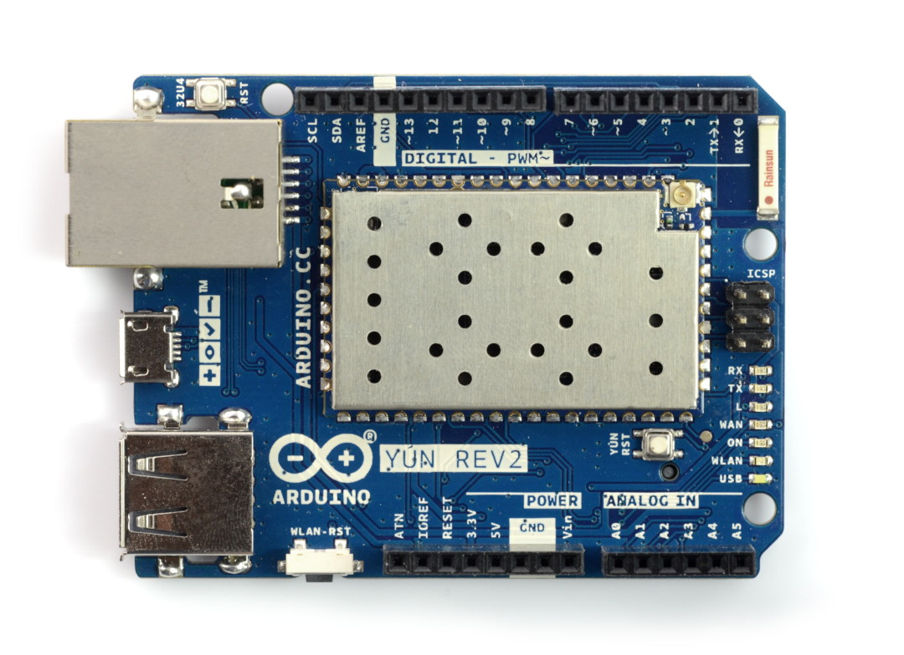

ARDUINO YÚN CURRENT MOTION-CONTROL WIRING
PHYSICAL PORT-TO-PORT LAYOUT · limit_switch_palas.ino
KEY
3.3V
5V
GND
CLOCK
DATA
STEP
DIR
ENA
EXISTING INPUT
ESC SIGNAL





iGAGING ABSOLUTEDRO PLUSCaptive Micro-B male lead from reader head
OPENED READER HEADOne-time internal REQ → GND jumper
FEMALE BREAKOUT CABLEExisting S + D− D+ − terminal cable
LOGIC LEVEL SHIFTERSparkFun BOB-12009 · LV 3.3 V · HV 5 V
ARDUINO YÚN REV2
DM542T5 V logic · common-anode inputs
BADASS RENEGADE 130A HV OPTO ESCD12 receiver-style throttle · Yún GND return
SOLDER INSIDE READER HEAD: REQ → verified PCB GND.
Confirm the chosen GND point measures <2 Ω to the breakout − terminal before soldering.
DRO CAPTIVE MICRO-B MALE
PLUGS DIRECTLY INTO FEMALE SOCKET
PLUGS DIRECTLY INTO FEMALE SOCKET
TERMINAL ORDER ON YOUR CABLE
S
+
D−
D+
−
POST-SURGERY TERMINAL LABELS
DRO HEAD REQ → verified GND pad · permanent internal jumper
BREAKOUT S = UNUSED · + = 3.3V · D− = CLOCK · D+ = DATA · − = GND
LOW SIDE D− → LV1 · D+ → LV2 · + → LV · − → GND
HIGH SIDE HV1 → YÚN D10 · HV2 → YÚN D11 · HV → 5V · GND → GND
DRIVER D3 → PUL− · D2 → DIR− · D9 → ENA− · 5V → PUL+/DIR+/ENA+
D12
D11
D10
D9
D8
D6
D5
D4
D3
D2
3V3
5V
GND
EXISTING WIRING — NOT DRAWN WITHOUT ENDPOINT PHOTOS
D4 RUN · D5 DIRECTION · D6 BOTTOM LIMIT · D8 TOP LIMIT
DM542T supply and actuator phase wiring remain installed unchanged
Pin mapping/reference PCB: TouchDRO AbsoluteDRO Plus · SparkFun BOB-12009 · DM542T V4.0